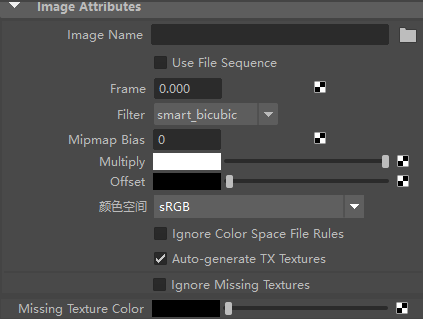
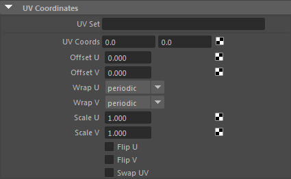

| 延伸阅读 |
|---|
| 有关完整的着色器文档，请参见《Arnold 用户手册》中的图像。 |
 
image 节点是一个颜色着色器，可以使用指定的图像文件执行纹理映射。您可以控制此帧在曲面上的位置、大小和旋转。您可以控制如何使用缩放 UV、翻转、包裹和交换属性在帧内分片纹理。
如果要使用分片纹理，而不是 UDIM 或特定 Maya 标记，您需要使用 Maya 文件。
信息：有关 UDIM 的详细信息，请单击此处。
渲染时，使用图像文件序列作为动画纹理。默认情况下处于禁用状态。
确定在运行颜色管理颜色空间文件规则时是否设置颜色空间属性。
禁用自动生成 .tx 纹理的开关。有关详细信息，请单击此处。